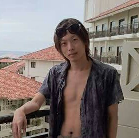

moni
勉強したことの備忘録や日常の出来事を記録しています。
guest@notebook:~/about$
moni自己紹介してください。
moniです。ソフトウェアエンジニアとして働きながら、興味を持ったことを学んでいます。
どんなことに興味がありますか？
プログラミング、数学、投資、そして日々の暮らしに関心があります。
普段はどのように学んでいますか？
気になったことを小さく試し、わからなかったことも含めて記録しながら学んでいます。